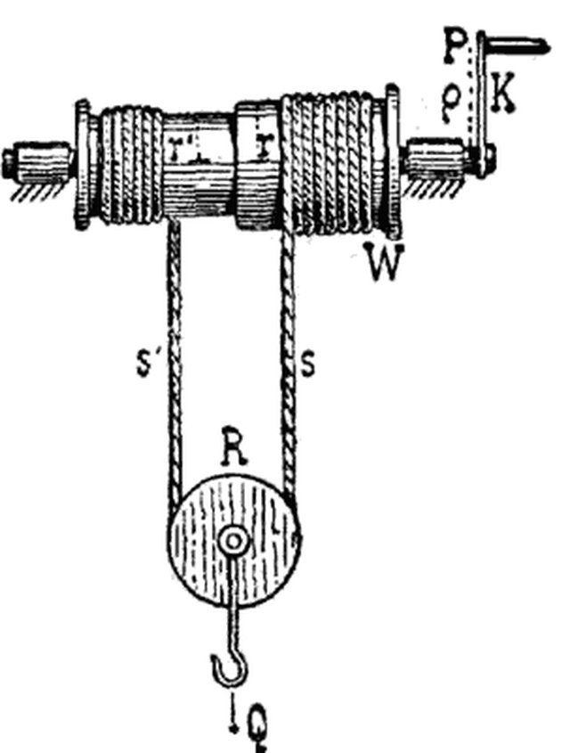
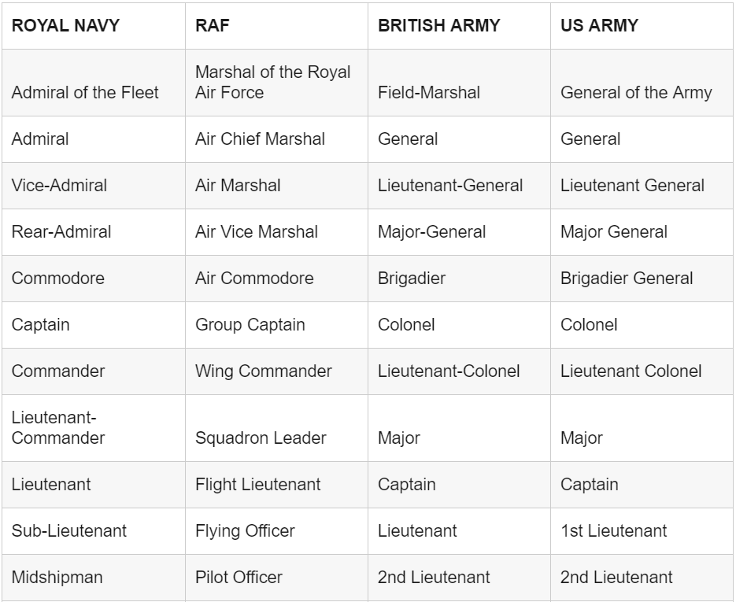

나폴레옹 시대 영국 전함의 전투 광경 - Lieutenant Hornblower 중에서 (9)
게시: 2019-04-08T06:30:43+09:00
선미갑판에 있는 버클랜드에게도 설명이 필요했다. 선미갑판에 가보니 부시는 정말 그럴 필요가 있다는 것을 실감했다. 인생 최초로 독립적인 지휘권을 가지고 수행하는 첫 모험이 실패로 끝나고 있데다 그의 전함이 이런 절대절명의 위기에 놓인 것을 지켜보고 있던 이 불운한 사내는 난간의 레일을 포도주병의 코르크처럼 뜯어내려는 듯 두 손으로 움켜쥐고 있었다. 이런 상황에서도 스미스가 그에게 전달해야 할 매우 중요한 소식이 하나 있었다. "로버츠가 죽었습니다." 그는 입술 한쪽 구석을 통해서 나지막히 말했다. "안돼 !" "죽었습니다. 론치 보트를 타고 있던 그를 대포알이 두동강 냈습니다." "세상에 저런 !" 부시가 로버츠의 사망 소식을 듣고 이제 자신이 이 전함의 선임부관(first lieutenant : PS1 참조)이라는 사실을 떠올리기 보다는 안됐다는 느낌을 먼저 받았다는 것이 부시 자신에게는 그나마 떳떳한 일이었다. 하지만 리나운 호가 좌초된 채로 포격을 받고 있는 이 상황에서는 슬픔이든 기쁨이든 느끼고 있을 시간이 없었다. 부시는 햇치 통로 아래를 향해 소리를 질렀다. "거기 아래 ! 미스터 혼블로워 !" "예, 부관님 !" "자네 함포들은 준비되었나 ?" "1분만 더 주십시요, 부관님." "부담을 갖는 것이 좋아." 부시는 스미스에게 그렇게 말하고는 더 큰 목소리로 햇치 아래를 향해 외쳤다. "내 명령을 기다리게, 미스터 혼블로워." "예, 부관님." 수병들은 캡스턴 바에 다시 자리를 잡고 발디딤을 단단히 한 뒤, 밀기 시작했다. "밀어라 !" 부스가 외쳤다. "밀어 !" 차라리 교회 건물의 옆구리를 미는 것이 더 나을 정도로, 아까 1인치 움직인 뒤로는 캡스턴 바가 전혀 움직이지 않았다. "밀어 !" 부시는 그들을 버려둔 채 하갑판으로 내려갔다. 그는 팽팽한 닻줄 위에 발을 올리고는 혼블로워에게 고개를 끄덕였다. 2문이 고물 쪽으로 옮겨진 뒤에 남은 좌현 15문의 함포들은 모두 장전을 완료하고 발포 위치로 밀어내아졌고, 수병들은 명령을 기다리고 있었다. "조장들은 모두 화승간을 들라 !" 혼블로워가 외쳤다. "다른 모든 수병들은 뒤로 물러나 ! 이제 내가 '하나, 둘, 셋'이라는 구령을 줄테니, '셋'에 화승간을 갖다댄다. 알겠나 ?" 알겠다는 목소리들이 웅성웅성 터져나왔다. "모두 준비되었나 ? 모든 화승간에 불이 잘 타고 있나 ?" 함포 조장들은 화승간을 휘둘러 거기에 달린 도화선의 불씨가 최대한 밝게 빛나도록 했다. "자, 그럼, 하나, 둘, 셋 !" 화승간들이 일제히 점화구로 내려갔고, 거의 동시에 함포들이 불을 뿜었다. 비록 점화구에 부어넣어진 화약의 양은 제각각 다를 수 밖에 없었지만 15발의 첫 포성과 마지막 포성 사이의 간격은 1초 미만이었다. 발을 닻줄에 대고 있던 부시는 포격의 반동으로 전함이 들썩이는 것을 느꼈다. 대포에 포탄을 2발씩 장전한 것이 효과를 더 크게 만들었다. 화약 연기가 열기 속으로 물결처럼 흘러들어왔지만 부시는 거기에 신경을 쓸 여유가 없었다. 배가 들썩이면서 닻줄이 움직이는 것이 그의 발 밑에서 느껴진 것이다. 분명히 움직이고 있었다. 움직였다 ! 그는 발을 들어 다시 위치를 잡아야 했다. 양묘기(windlass)의 톱니가 새로 돌아가면서 톱니 멈춤쇠가 철컹 움직이는 소리가 모두에게 들렸다. 철컹-철컹. 화약 연기 속에서 누군가가 환호성을 올렸고 다른 수병들도 환호했다.

(Windlass라는 단어를 사전에서 찾아보면 양묘기, 윈치 등으로 번역되는데, 한글로 봐도 뭔지 이해하기가 좀 어렵습니다. 간단히 말하면 바퀴 같은 것을 돌려서 줄을 감아들이는 장치인데, 도르래라고 표현하는 것이 맞을까요 ? 도르래의 뜻을 보면 ‘바퀴에 홈을 파고 줄을 걸어서 돌려 물건을 움직이는 장치’라고 하니, 도르래가 더 맞는 번역 아닐까 싶기도 합니다.)
"조용 !" 혼블로워가 호통을 쳤다. 철컹-철컹-철컹. 마지못해 움직이는 듯한 소리. 하지만 분명히 전함은 움직이고 있었다. 닻줄은 마치 치명상을 입은 괴물처럼 천천히 딸려오고 있었다. 이대로 계속 움직이게 할 수만 있다면 ! 철컹-철컹-철컹. 철컹거리는 소리의 간격이 점점 짧아지고 있었다. 부시도 닻줄이 딸려오는 속도가 점점 빨라지고 있다는 것을 스스로에게 인정해야 했다. "이곳 지휘를 맡게, 미스터 혼블로워." 부시는 그렇게 말하고는 상갑판으로 뛰어올라갔다. 만약 배가 자유롭게 움직일 수 있다면 당장 선임부관이 신경써야 할 긴급한 일들이 있을 것이었다. 캡스턴 톱니멈춤쇠는 이젠 거의 명랑한 곡조의 소리를 낼 정도로 빠른 속도로 움직이고 있었다. 확실히 상갑판에는 신경써야 할 일들이 잔뜩 있었다. 당장 내려야 할 결정사항이 많았다. 부시는 버클랜드에게 가서 모자에 손을 대고 경례를 했다. "명령이 있으신지요, 함장님 ?" 버클랜드는 별로 행복하지 않은 눈길을 그에게 돌렸다. "조수를 놓쳤군." 그는 말했다. 지금이 조수가 가장 만조인 때였다. 그러니 만약 그들이 다시 좌초된다면 거기서 빠져나오는 것은 간단한 일이 아닐 것이었다. "예, 함장님." 부시가 말했다. 이 결정은 버클랜드만이 내릴 수 있었다. 다른 어느 누구도 그 책임을 나눠가질 수 없었다. 하지만 생애 최초로 지휘한 전투에서 패배를 인정한다는 것은 정말 끔찍하게 어려운 일이었다. 버클랜드는 마치 뭔가 영감이라도 구하려는 듯 만 안쪽을 둘러보았다. 거기에는 포대들로부터 나와 잔뜩 낀 화약 연기 위에 적색과 황색의 스페인 깃발이 휘날리고 있었다. 영감 따위를 찾을 수는 없었다. "육풍이 불어야 빠져 나갈 수 있는데." 버클랜드가 말했다. "예, 함장님." ----------------- PS1. 영어가 원래 스펠링 따로 발음 따로 되는 단어들이 많은 단어이긴 합니다만, 군사 용어 중에 특히 그런 것이 많고, 그런 것들은 대부분 전통적 선진국 프랑스에서 수입된 단어입니다. 중위 내지는 부관이라는 뜻의 lieutenant 같은 단어도, 한눈에 딱 봐도 프랑스어 냄새가 폴폴 나는 단어입니다. 'in lieu of' (~ 대신에)라는 숙어에서 보듯이, lieu는 '장소' 라는 뜻이거든요. Tenant은 불어로 쥐고 있다 (tener의 현재진행형) 라는 뜻이라서, "captain이 자리를 비운 사이에 그 자리를 대신 하는" 정도의 뜻으로서 부관/중위를 뜻하는 lieutenant (루테넌트, 불어로는 류뜨낭)이라는 계급 이름이 생겨난 것입니다. 그 중에서도 방금 부시가 차지하게 된 계급인 1st lieutenant라는 것은, 사실 계급이 아니라 보직입니다. 미국 육군에서는 1st lieutenant가 중위의 계급이지만, 영국 해군에서는 아예 존재하지 않는 계급입니다. 영국 해군에서는 1st lieutenant나 2nd lieutenant 같은 것이 없고, 그냥 lieutenant라는 계급만 있는데, 우리 해군의 대위에 해당하는 계급입니다. 전통적으로 영국 해군에서는 함장이 captain이고, 함장 외의 장교들은 다 lieutenant였습니다. 이 lieutenant라는 계급을 나폴레옹 전쟁 소설에서는 뭐라고 번역할지 항상 애매한데, 여기서는 그냥 '부관'이라고 번역했습니다. 그런 부관들 사이의 계급 차이는 따로 없으나, 누가 먼저 임관했느냐에 따라 서열을 정했습니다. 그래서 가장 선임인 사람이 1st lieutenant, 그 다음이 2nd, 그 다음이 3rd... 이런 식이었지요.

(현대 영국 해군에서 중위는 sub-lieutenant, 소위는 midshipman입니다. 소령은 lieutenant-commander고요.)
여기서는 기존의 1st lieutenant인 로버츠가 전사하면서 부시가 자동으로 1st lieutenant가 되는 장면이 나오는데, 이 1st lieutenant라는 것은 꽤 특별한 위치였습니다. 3rd가 2nd가 되는 것은 큰 의미가 없지만, 2nd가 1st가 되는 것은 특별한 의미가 있었는데, 그것은 바로 commander 또는 captain으로의 승진의 기회였습니다. 어떤 군함이 큰 승전을 거둘 경우, 가장 기뻐하는 사람이 바로 1st lieutenant였습니다. 함장이야 더 승진할 계급이 없었으므로 (제독으로의 승진은 오로지 연공서열에 의한 것이었습니다), 해군성 본부(the Admiralty)에서 어떤 군함의 승전을 치하하는 가장 대표적인 포상이 그 1st lieutenant를 준함장(commander)으로 승진시켜 작은 sloop함(돛대 2개짜리 작은 군함)의 독립적인 지휘권을 주는 것이었습니다. 대부분 준함장은 곧 진짜 함장 즉 post-captain이 되었으므로, 함장으로의 승진을 꿈꾸는 모든 lieutenant는 먼저 1st lieutenant가 되는 것이 1차 목표였습니다. 그런데 원래 출항할 때 4th lieutenant였던 부시가 이런저런 상황이 생기면서 1st lieutenant가 된 것은 정말 감개무량한 일이라고 할 수 있었지요.
Source : https://www.bbc.co.uk/academy/en/articles/art20130702112133708 https://en.wikipedia.org/wiki/Lieutenant_(navy)